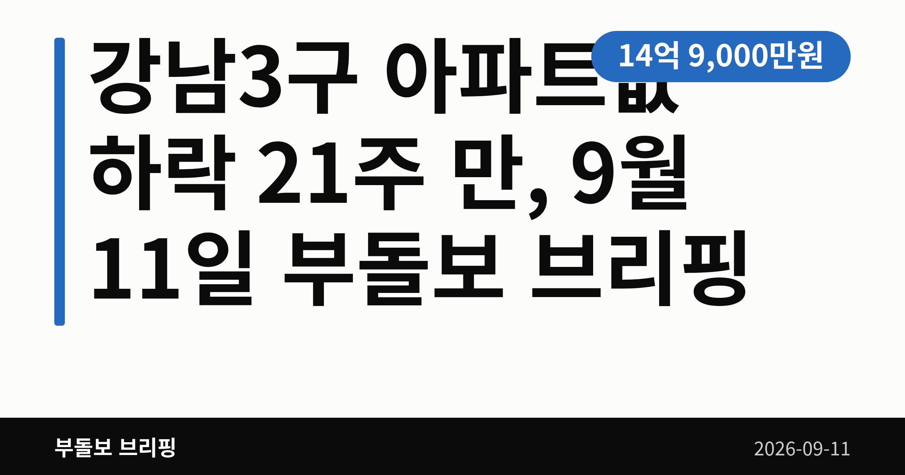
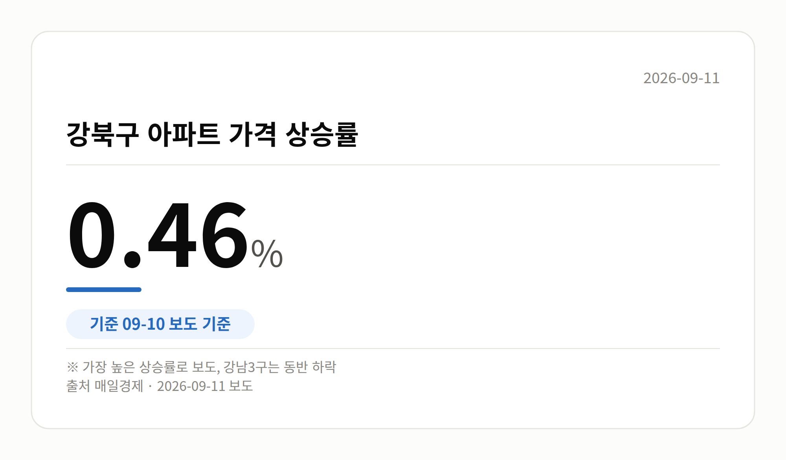
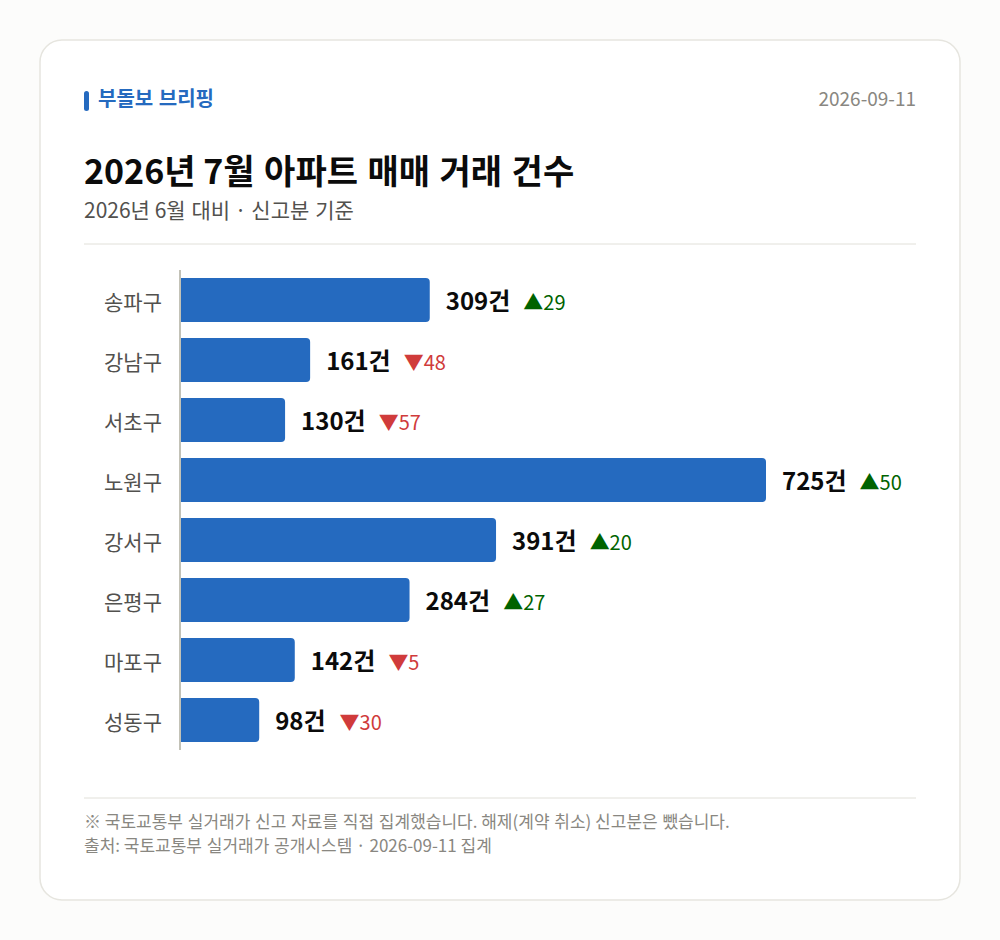

이 글은 2026년 9월 11일 기준으로 정리한 내용입니다. 실거래 수치는 2026년 7월 신고분입니다.
강남3구 아파트값 하락이 확인됐습니다. 강남3구, 즉 강남·서초·송파구가 한꺼번에 내린 건 21주 만인데요. 그런데 서울 전체는 여전히 오르고 있습니다.
9월 10일 여러 매체가 강남3구 아파트 매매가격이 모두 내렸다고 보도했습니다. 강남·서초에 이어 송파구마저 하락세로 돌아서면서 세 곳이 나란히 약세가 됐습니다.
매일경제는 세 구가 모두 약세로 바뀐 것이 5개월 만이라고 전했습니다. 앞의 주 단위 표현과 기준이 같은지는 기사만으로 확인되지 않습니다.
구별 하락률은 이번 자료에 나오지 않았습니다. 얼마나 내렸는지보다 세 곳이 '동시에' 꺾였다는 점이 이번 뉴스의 핵심입니다.
이번 강남3구 아파트값 하락의 배경으로 매일경제는 세제 개편안을 꼽았습니다. 고가 주택과 비거주 1주택자(집 한 채를 가졌지만 그 집에 살지 않는 사람)를 겨냥한 안이라는 설명입니다.
특히 양도소득세(집을 팔 때 남긴 차익에 매기는 세금) 인상 부담이 고가 주택 매수 심리를 위축시켰다는 풀이입니다. 데일리굿뉴스도 세제 개편 불확실성을 배경으로 들었습니다.
다만 이는 언론의 해석입니다. 세제 개편안의 구체 내용과 확정 여부, 시행 시점은 아직 기사에서 확인되지 않습니다.
같은 날 서울 전체 그림은 달랐습니다. 오름폭은 줄었지만 방향은 여전히 위쪽입니다.
| 구분 | 흐름 | 출처 |
|---|---|---|
| 강남3구 | 일제히 하락 | 여러 매체 |
| 서울 전체 | 83주 연속 상승, 상승폭 축소 | 매일경제 등 |
| 강북구 | 0.46%, 가장 높은 상승률 | 매일경제 |

상승을 이끈 곳은 노도강(노원·도봉·강북구) 등 외곽의 중저가 아파트입니다. 매일경제는 중저가 주택 매수 수요가 여전히 강하다고 전했습니다.
서울 상승세의 중심이 외곽으로 옮겨 간 모양새입니다. 매일경제는 이 흐름이 이어지면 자산 양극화 우려가 제기될 수 있다고 짚었습니다.
서울 8개 구에서 신고된 매매는 2240건입니다. 2026년 6월 2254건과 견주면 -14건입니다.
거래가 많은 곳: 송파구 309건(+29) · 강남구 161건(-48) · 서초구 130건(-57)
송파구 전세가율(전세 보증금 ÷ 매매가)은 가운뎃값 40.0%입니다. 같은 단지·같은 면적 76곳을 견줬습니다.
서울 25개 구 가운데 거래가 가장 크게 움직인 곳: 중랑구 +137.4%(211→501건, 묵동에 66.3% 몰림) · 동작구 +55.6%(153→238건)
이번 달 신고가

→ 그림 파일 img-stats-volume.png 을 이 자리에 올리세요
국토교통부 실거래가 신고 자료를 직접 집계했습니다. 해제(계약 취소) 신고분은 뺐습니다.
여러분이 눈여겨보는 동네는 요즘 강남 쪽 흐름에 가까운가요, 외곽 쪽 흐름에 가까운가요?
댓글로 알려 주시면 다음 글에 반영하겠습니다.